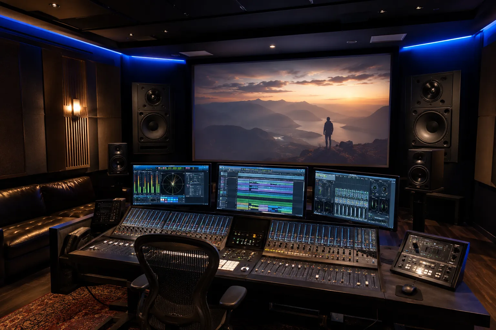

Audio y video para auditorios corporativos: sonido, microfonía y visualización.
Diseñamos e integramos sistemas audiovisuales para auditorios corporativos,
salas magnas, centros de capacitación y espacios institucionales.
Consideramos
dimensiones, altura, aforo, ruido ambiental, reverberación, cobertura, nivel esperado, distancia
de visualización, microfonía, iluminación, operación técnica e infraestructura antes de
seleccionar equipos.
Un auditorio corporativo exige que voz, imagen y operación funcionen como un solo sistema
El auditorio es el espacio donde la empresa comunica sus ideas más importantes: capacitaciones, conferencias, juntas generales, presentaciones directivas, eventos internos y encuentros con clientes o aliados.
La integración debe considerar inteligibilidad de voz, cobertura, visibilidad, microfonía, fuentes, iluminación funcional, control y operación para que cada componente responda al uso real del espacio.
Inteligibilidad de voz
Microfonía, procesamiento y refuerzo sonoro definidos para que el mensaje se escuche con claridad en el área de audiencia.
Cobertura uniforme
La cantidad, ubicación y orientación de altavoces se define para reducir diferencias excesivas de nivel entre zonas.
Visualización adecuada
Proyección o displays se dimensionan según distancia, luz ambiental, resolución, contenido y ángulos de visión.
Operación estructurada
Racks, fuentes, señal, control y procedimientos se organizan para simplificar la operación y el mantenimiento.
Un auditorio mal dimensionado puede comprometer audio, imagen y operación
Una cobertura sonora irregular, pantallas mal dimensionadas, microfonía insuficiente, rutas de señal improvisadas o controles complejos pueden generar problemas de inteligibilidad, visibilidad y operación.
El reto no es solamente comprar altavoces, micrófonos o proyectores. Un auditorio requiere definir cobertura, presión sonora esperada, procesamiento, potencia, impedancia o línea distribuida cuando aplique, visualización, cableado, control, seguridad de montaje y capacidad de crecimiento.
Voz poco clara
Una relación inadecuada entre cobertura, nivel, ruido y reverberación puede dificultar la inteligibilidad de los ponentes.
Imagen sin impacto
Tamaño, brillo, resolución, distancia y ángulos de visión deben calcularse según el contenido y las condiciones del auditorio.
Iluminación deficiente
La iluminación debe coordinarse con escenario, cámaras, proyección o pantallas para evitar comprometer la visibilidad.
Operación complicada
Una arquitectura de señal y control poco clara complica cambios de fuente, microfonía, reproducción y preparación de eventos.
Diseñamos la arquitectura audiovisual completa del auditorio
Evaluamos dimensiones, altura, aforo, distribución de audiencia, ruido, reverberación, cobertura, visualización, fuentes, microfonía, infraestructura, operación y posibilidades de crecimiento para definir el sistema.
Audio profesional
Dimensionamos altavoces, amplificación y procesamiento digital según aforo, dimensiones y tipo de evento.
Microfonía integral
Sistemas inalámbricos de mano, solapa, diadema y podio con gestión de frecuencias libre de interferencias.
Visualización gran formato
Proyección láser de alto lumen o muros LED diseñados para máxima nitidez desde cualquier asiento.
Automatización y control
Control centralizado de audio, video, iluminación y telones mediante interfaces táctiles de un solo toque.
Ingeniería integral para auditorios corporativos
Cada componente es seleccionado y calibrado para responder a las exigencias acústicas y visuales del auditorio.
Refuerzo sonoro principal y delay
Arreglos lineales o bocinas de dispersión controlada calculadas para mantener presión sonora uniforme sin zonas muertas.
Microfonía inalámbrica profesional
Micrófonos de mano, diadema y solapa con procesador DSP para cancelar retroalimentación y ecualizar cada voz.
Proyección láser o pantallas LED
Displays de gran escala y alta definición para presentaciones, videos institucionales y transmisión en vivo.
Cámaras PTZ y streaming
Captura de video en alta definición con encuadre automático o control remoto para conferencias y grabación.
Procesamiento DSP y matrices AV
Ruteo de señal digital, ecualización paramétrica, control de niveles y gestión de fuentes de audio/video.
Control centralizado y puesta a punto
Interfaz táctil personalizada, pruebas de presión sonora, calibración acústica y capacitación al personal técnico.
Tipos de espacios donde aplicamos esta solución
La integración de audio y video para auditorios corporativos puede adaptarse a espacios formales, institucionales o multipropósito, siempre considerando tamaño, audiencia, uso y operación.
 Auditorios empresariales
Auditorios empresariales
 Salas magnas
Salas magnas

Centros de capacitación Auditorios institucionales
Auditorios institucionales
 Salones de conferencias
Salones de conferencias
 Espacios multipropósito
Espacios multipropósito
Cómo trabajamos tu proyecto de audio y video
Un proceso estructurado para definir usuarios, acústica, visualización, cámaras, microfonía, plataformas, señal, cableado y control antes de cerrar el proyecto.
Nos contactas
Cuéntanos medidas, aforo, tipo de eventos, plataformas y necesidades del auditorio.
Revisamos el espacio
Analizamos dimensiones, reverberación, ruido ambiental, puntos de red, altura y visibilidad.
Diseñamos la solución
Definimos refuerzo sonoro, microfonía, proyección, cableado, rack y control audiovisual.
Propuesta clara
Te entregamos especificaciones técnicas, equipos, tiempos de entrega y cotización formal.
Instalamos
Montaje estructural, cableado certificado, conexión, calibración de DSP y pruebas en sala.
Te capacitamos
Explicamos la operación del sistema, interfaces táctiles y mejores prácticas a los operadores.
No seleccionamos equipos aislados: diseñamos el auditorio como un sistema acústico y visual
Un auditorio debe diseñarse considerando acústica arquitectónica, cobertura uniforme, inteligibilidad de la voz, potencia del refuerzo, visibilidad de los contenidos y operación simplificada.
Nuestro enfoque coordina todos los elementos para que el evento transcurra con total nitidez, sin fallas de audio ni interrupciones operativas.
Una decisión profesional para tu negocio
- Asesoría personalizada
- Propuesta formal
- Equipos originales
- Instalación profesional
- Integración estética
- Capacitación básica de uso
- Acompañamiento técnico
Marcas profesionales para soluciones de alto rendimiento
Seleccionamos tecnología profesional según acústica, visualización, plataforma, compatibilidad, conectividad, operación y presupuesto del proyecto.
Preguntas frecuentes sobre auditorios corporativos
Resolvemos tus dudas principales para ayudarte a planear e invertir con total tranquilidad y claridad técnica.
Puede incluir refuerzo sonoro, microfonía inalámbrica, pantallas o proyectores de gran formato, procesadores DSP, consolas, control centralizado y capacitación operativa.
Sí. Realizamos una evaluación técnica de los equipos existentes (bocinas, amplificadores, cableado) para determinar qué componentes pueden conservarse y qué conviene actualizar.
Depende de la distancia del público, altura del techo, luz ambiental y presupuesto. Calculamos el tamaño y tipo de display óptimo para garantizar legibilidad completa.
Seleccionamos patrones de dispersión de altavoces y micrófonos adecuados, calibramos procesadores digitales de señal (DSP) con supresión de feedback y ajustamos curvas de ecualización en sala.
Sí. Diseñamos interfaces táctiles intuitivas con botones de un solo toque para encendido de escenario, presentaciones o conferencias, y capacitamos al equipo encargado.
Diseñemos el sistema de tu auditorio corporativo
Cuéntanos qué tipo de espacio tienes y revisamos dimensiones, aforo, microfonía, proyección y control audiovisual.
Hablemos de tu
auditorio corporativo
Platícanos si se trata de un auditorio nuevo o modernización, su capacidad y necesidades técnicas. Podemos orientarte sobre refuerzo sonoro, pantallas, microfonía y control.
Solicita asesoría para tu auditorio
Completa el formulario y se abrirá WhatsApp con la información estructurada. Incluye medidas, altura, aforo, tipo de eventos, equipos existentes y si el espacio es nuevo o requiere modernización.